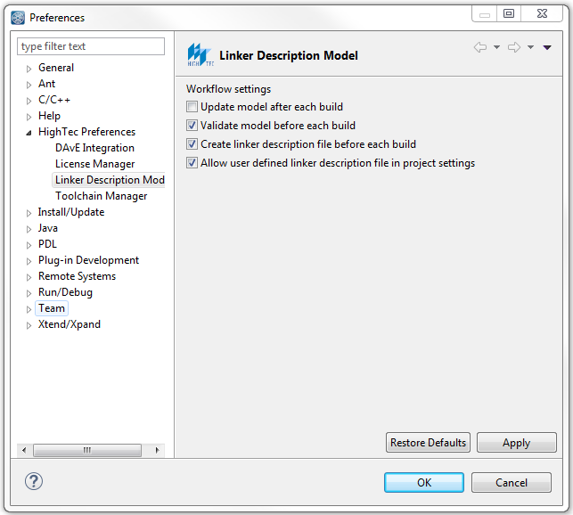

Do 13.04.2017 13:28
SSW-Manager gestartet und für rpecu neuen branch kompilieren:
Sagt Modul gleich zu Beginn BUILD_SYSTEM_ID variable not found????
Muss vorher in Eclipse vorher gebaut werden
Do 13.04.2017 13:59
